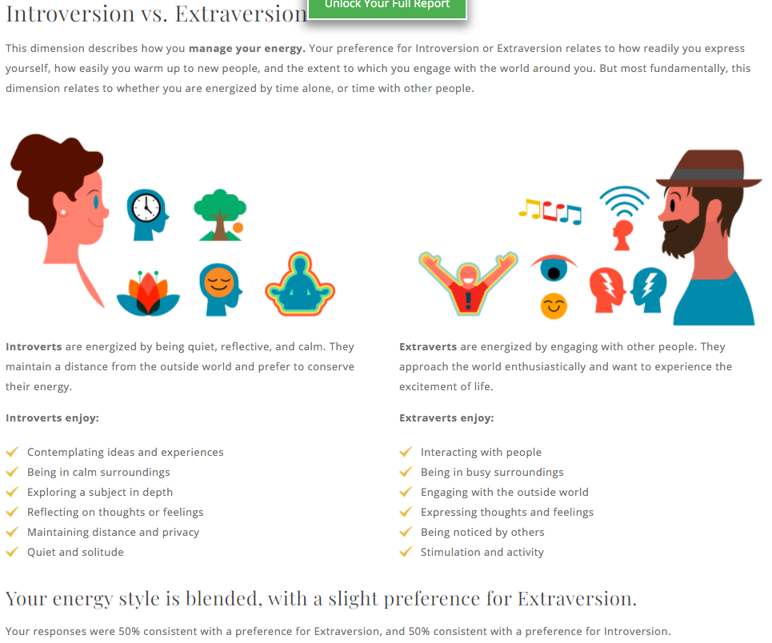
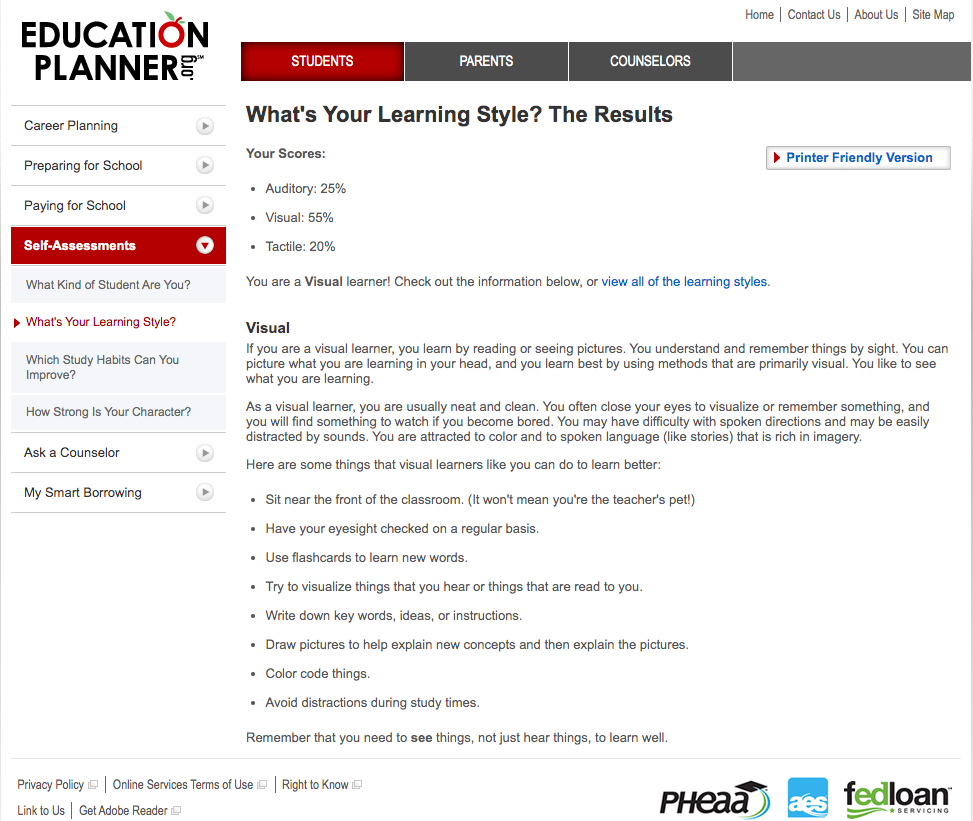
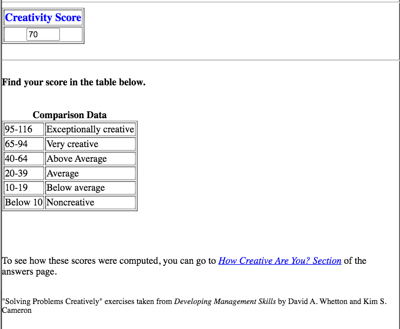

INTRODUCTION
This is just a very simple page for you to use as a bit of a template.
So my short intro.... An IT based educator always looking to learn more.
What's your profile going to say about you?
MY PROFILE
My Background
My formal education has been through RMIT in the IT field. Having moved around particular areas of IT in the workforce ranging from - Web Design and Development, IT Solutions, Search Engine Optimisation, etc.
First IT job started when I was in my late teens, and have been in IT ever since still bouncing around different areas.
Education
I've taught at different levels of education. Younger primary school students in after school coding programs through Invent the World. University level education ranging from 1st year to Post Grad students through RMIT on campus and online via Open University Australia
Hobbies
While there I don't have formal education in philosophy it is very much an interest of mine.
Always interested in reading and learning more! I can not recommend having another interest enough outside of Information Technology. Such development and passion in other areas can only benefit you more.
Interest in IT
Really anything that continues to push me further...
... But to aswer the question I would be looking at a Business Analyst role or Security Consultant in the future. I'm very much interested in the security field and business management, so I'd hope to move into one of those areas and continue learning of the many different facets of IT. While interested in transitioning into one of those fields, I would hope to have time available to allow for me to stay within the education sector.
Ideal Job
Really anything that continues to push me further...
to answer the question I would be looking at a Business Analyst role or Security Consultant in the future. I'm very much interested in the security field and business management, so I'd hope to move into one of those areas and continue learning of the many different facets of IT. While interested in transitioning into one of those fields, I would hope to have time available to allow for me to stay within the education sector.
Personal profile
Myers-Briggs Test
Really anything that continues to push me further...
Learning Style Test
... But to answer the question I would be looking at a Business Analyst role or Security Consultant in the future. I'm very much interested in the security field and business management, so I'd hope to move into one of those areas and continue learning of the many different facets of IT. While interested in transitioning into one of those fields, I would hope to have time available to allow for me to stay within the education sector.
Creativity Test
test
PROJECT IDEA
Overview
Really anything that continues to push me further...
But to answer the question I would be looking at a Business Analyst role or Security Consultant in the future. I'm very much interested in the security field and business management, so I'd hope to move into one of those areas and continue learning of the many different facets of IT. While interested in transitioning into one of those fields, I would hope to have time available to allow for me to stay within the education sector.
Motivation
Really anything that continues to push me further...
But to answer the question I would be looking at a Business Analyst role or Security Consultant in the future. I'm very much interested in the security field and business management, so I'd hope to move into one of those areas and continue learning of the many different facets of IT. While interested in transitioning into one of those fields, I would hope to have time available to allow for me to stay within the education sector.
Description
Really anything that continues to push me further...
... But to answer the question I would be looking at a Business Analyst role or Security Consultant in the future. I'm very muh interested in the security field and business management, so I'd hope to move into one of those areas and continue learning of the many different facets of IT. While interested in transitioning into one of those fields, I would hope to have time available to allow for me to stay within the education sector.
Tools and Technologies
Really anything that continues to push me further...
... But to answer the question I would be looking at a Business Analyst role or Security Consultant in the future. I'm very much interested in the security field and business management, so I'd hope to move into one of those areas and continue learning of the many different facets of IT. While interested in transitioning into one of those fields, I would hope to have time available to allow for me to stay within the education sector.
Skills Required
Really anything that continues to push me further...
... But to answer the question I would be looking at a Business Analyst role or Security Consultant in the future. I'm very much interested in the security field and business management, so I'd hope to move into one of those areas and continue learning of the many different facets of IT. While interested in transitioning into one of those fields, I would hope to have time available to allow for me to stay within the education sector.
Outcome
Really anything that continues to push me further...
... But to answer the question I would be looking at a Business Analyst role or Security Consultant in the future. I'm very much interested in the security field and business management, so I'd hope to move into one of those areas and continue learning of the many different facets of IT. While interested in transitioning into one of those fields, I would hope to have time available to allow for me to stay within the education sector.